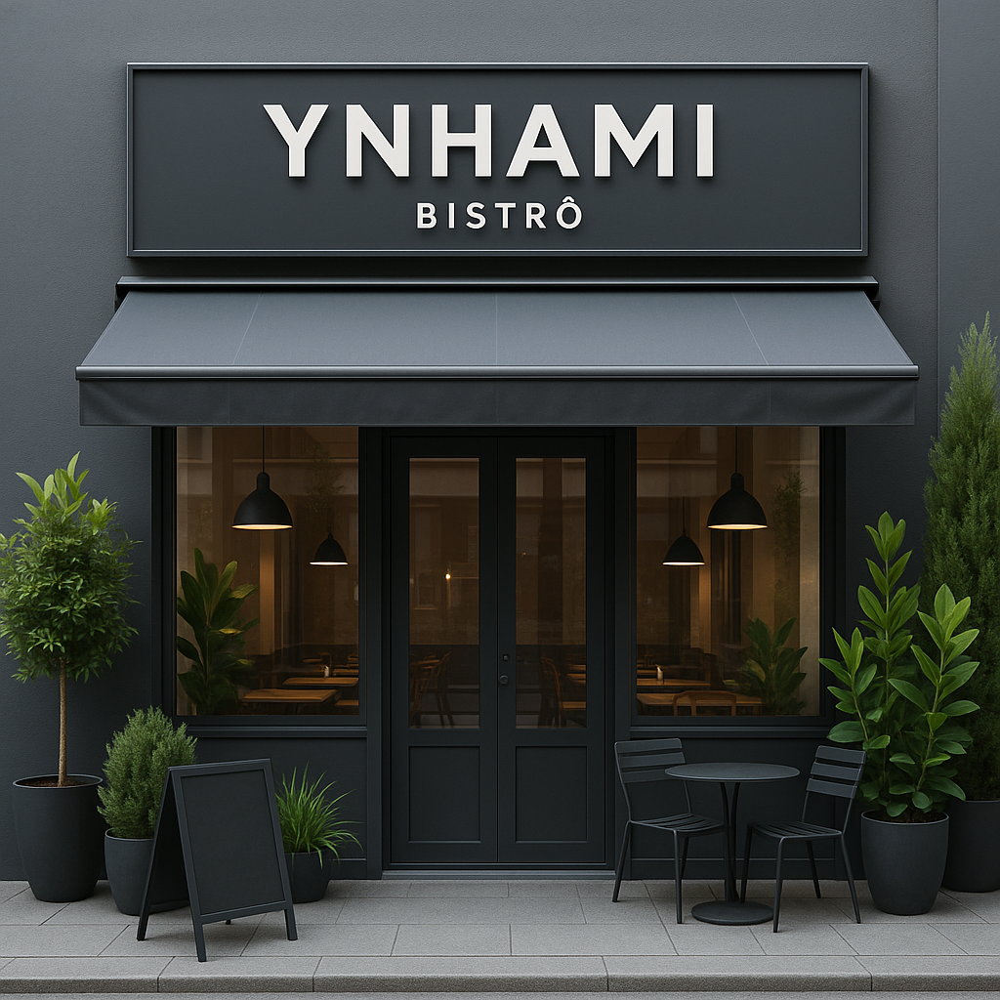

Bistrô Ynhami
Sobre
Menu
Contato
Bem-vindo

Com foco em promover um consumo mais inteligente.
Incentivando escolhas mais ecológicas e responsáveis.
Saiba mais sobre práticas sustentáveis para o seu cotidiano:
Unimed Viver Bem
Sicredi Dexis
Audi Belo Horizonte